Jointly Reinforcing Diversity and Quality in Language Model Generations
阅读总结
该文章承接之前关于LLM Diversity的研究。我们之前已经阅读的文章主要是通过采样、数据合成的方式提高LLM Diversity。今天阅读的文章是通过在RL阶段引入Diversity reward，从Quality + Diversity的角度约束RL阶段的参数更新，从而提高LLM Diversity。
本文的写作逻辑非常清晰。算法的formula讨论，模型训练的数据集、框架，测试使用的benchmarks，消融实验的设计都非常棒，很有学习意义。
研究背景
先来谈一谈Reinforce Learning。现有的大部分LLM做强化学习首选的方案就是GRPO。通俗地将，GRPO的原理就是：给定一个prompt，让LLM输出n个回答。Reward model对这些回答进行打分。将n个回答视为一组，我们希望鼓励LLM输出组内Reward在平均值以上的回答，拒绝组内Reward在平均值以下的回答。具体的数学原理参见link，强化学习台湾大学李宏毅老师视频link。
现有的Reward model在打分时，只针对单个回答的质量，而没有考虑组内的样本的多样性。当我们组内的多个回答质量相当时，我们应该给组内比较Diversity的回答额外的Reward，鼓励更加多样的回答。为了能够提高LLM Diversity，本文提出在RL阶段引入Diversity Reward的方法，鼓励模型输出更加多样性的内容。
解决方法
如何设计Diversity Reward以及将该Reward融入到现有的RL算法中，是本文需要解决的问题。
Diversity Reward的设计
考虑给定一个prompt后LLM的n个回答。我们可以从语义的角度对n个回答做聚类。位于相同聚类的回答语义近似，不同聚类的回答语义不同。如图所示，LLM的回答可以划分出3个聚类，其中绿色回答的Quality Reward与蓝色回答一样，但因为是更加Diversity的回答，Reward被放大。 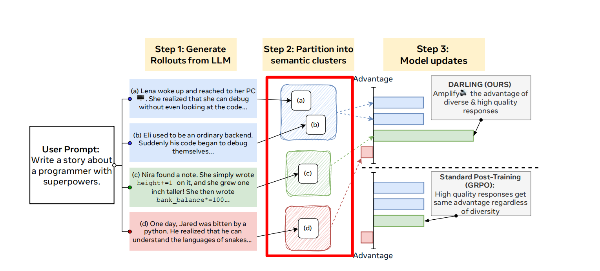
为了从语义的角度衡量两个回答是否相似，本文训练了一个classifier。(这里比较奇怪：作者并没有详细讨论classifier的设计与实现 而是放在Appendix里面 可能是技术含量比较低吧。这里为了更全面的了解文章，我们做一下讲解)
- Base model: ModernBERT-base(一个预训练transformer模型 参数量1GB)
- Traning dataset: 1000 NoveltyBench annotations (2000 responses) 拼接annotations和response，模型需要预测response1 和 response2是否相似。
- testing: 预留100个data，和现有的classifier以及LLM Judge(GPT-4o, o1-mini, o1-mini-cot)做性能对比，优于LLM Judge。(选用这些模型也是研究惯例吧， 一开始的LLM judge大家用的都是OpenAI的model) 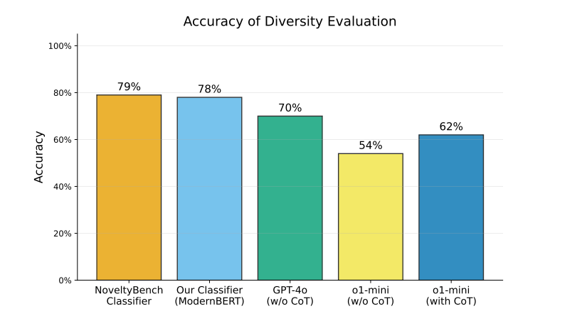
一旦我们有了一个classifier，就可以逐个pair判断回答是否相似。使用如下的公式计算单个Diversity Reward。举个例子：对于4个answer，以蓝色answer为例，有1个回答和他类似，2个回答和他不一样，计算出的Diversity Reward就是 2 / (4 - 1) = 2/3。 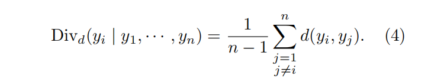 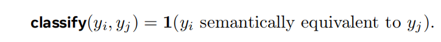 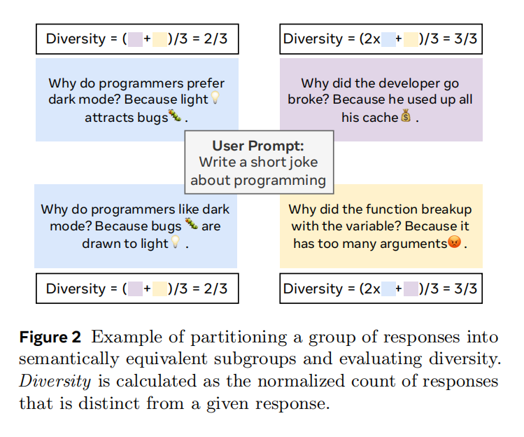
将Diversity Reward融入RL
前面已经讲过GRPO算法的基本原理，这里给出公式。为了将Diversity Reward引入RL过程，需要对r(x, y)进行改写。 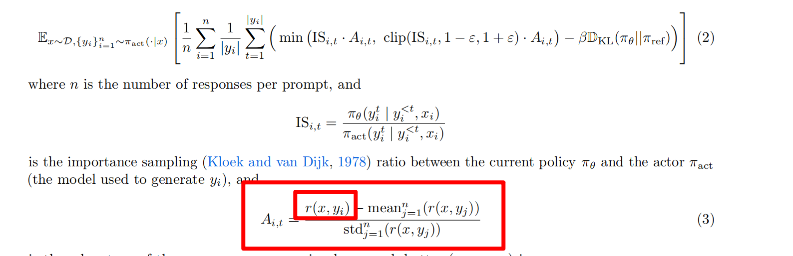
如下，作者对GRPO做了3处修改：(1)将Diversity Reward作为一个0-1的放缩因子乘到原理的Reward function。(2)将图中的Σ部分修改为token level：计算损失时，直接除以整个 Batch 中所有 token 的总数。而不是除以句子的总数。之所以这样处理，是因为前人的研究发现，除以句子的总数放大了短句的reward。(3)去除了Advantage function的normalization。作者认为标准化的操作会放大噪声，后续也会有消融实验。 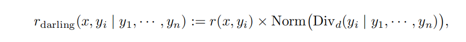 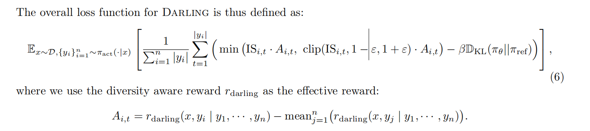
至此，讲述完了整篇文章的Method部分，方法比较常规，但是是LLM Diversity领域的重要尝试。下面是实验部分，证明该方法的表现。
实验部分
本文将Non-verifiable Tasks和Verifiable Tasks分开进行实验。具体来说，就是将开放式问题和数学问题分开进行实验，因为一个是有具体答案的，另一个是没有的。
Non-verifiable Tasks
实验设置
- baseline: 未修改的GRPO | DivPO(强行把“最具有多样性”的作为 Chosen，把“最缺乏多样性”的作为 Rejected。) | GRPO-Unlikeliness(给那些概率较低（低似然）的回答更高的奖励，强迫模型去探索“冷门”路径。) | Our method
- model: Llama-3.1-8B-Instruct | Llama-3.3-70B-Instruct
- data: subset of 10k prompts in WildChat 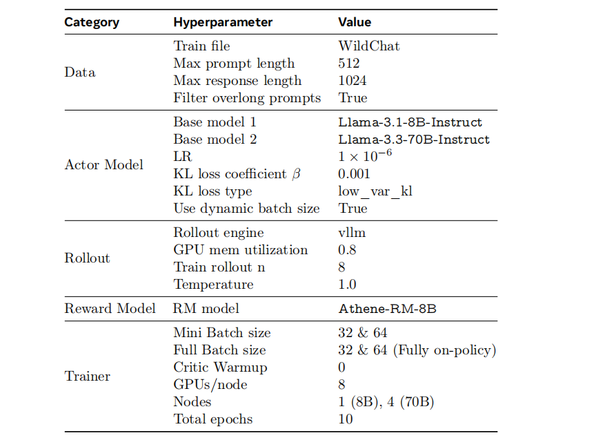
- benchmarks: AlpacaEval 2.0(评估模型通用指令遵循，对输出长度进行控制的能力，使用LCWR length control win rate指标) ArenaHard v2.0(复杂逻辑与创意写作，模型需要根据指令进行特定格式、长度的输出，使用WR win rate指标) EQ-Bench(创意写作/情感智能任务，使用LLM judge的评分指标) (开放式问题，使用Distinct-n计算n-gram的多样性来 评估模型输出的多样性)
实验结果
Darling 在所有基准测试中均实现了质量与多样性的双重最佳。 具体而言，在所有基准模型中，Darling 取得了最高的质量评分（AlpacaEval 和 ArenaHard ），同时在语义层面（Distinct）和词汇层面（Distinct-4）也都达到了最高的多样性。此外，尽管本文并未显式地在创意写作提示词上进行训练，但与所有基准模型相比，Darling 在 EQ-Bench（创意写作）中获得了最高的 ELO 分数，证明了提升多样性对创意类任务的显著效果。 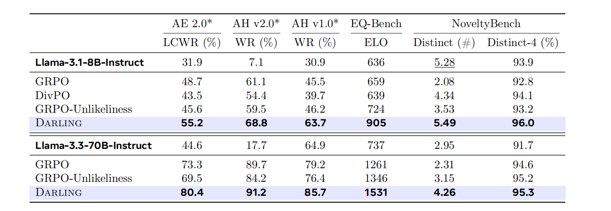
进一步的，本文绘制Quality-Diversity曲线，发现本文提出的方法扩展了Quality-Diversity的边界(将图像的右上角做了延申)。 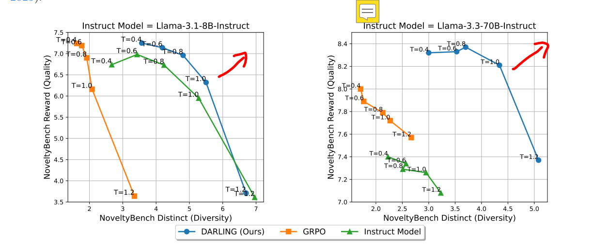
Verifiable Tasks
实验设置
- baseline: 与前面设置一样
- model: Qwen3-4B-Base | Qwen3-14B-Base
- data: subset of 10k data in DeepscaleR dataset 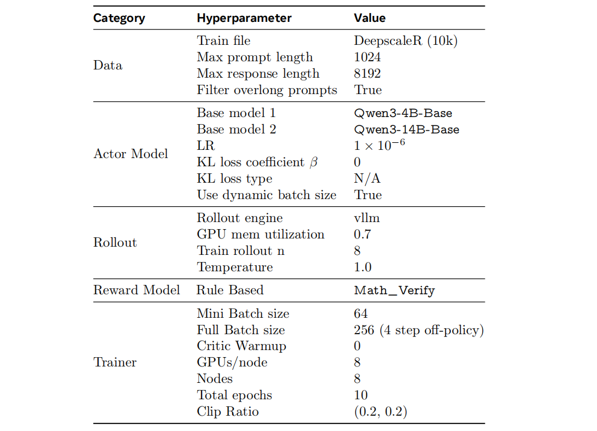
- benchmarks: AIME25 (极其强调深度推理，通常需要模型进行多步复杂的逻辑推导。) HMMT & Brumo 2025 (2025 年最新的竞赛题目，题型新颖，能够有效解决数据污染的问题。)
实验结果
根据实验结果，在不同的pass@k下，本文提出的训练方法有效地提高了模型在Verifiable Tasks上的表现。 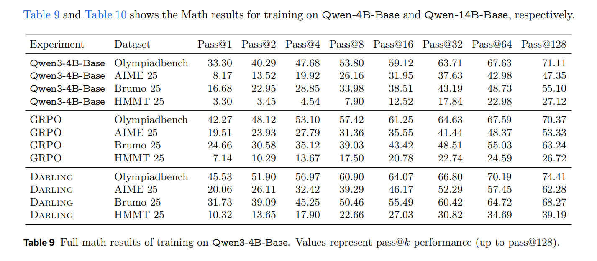 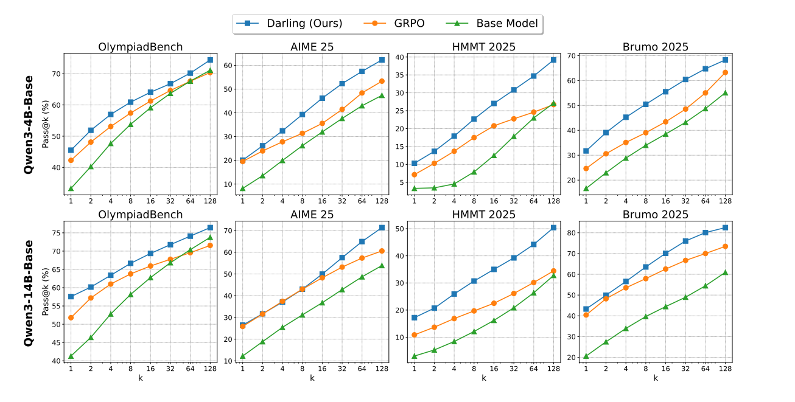
消融实验
本文主要做了3个消融实验：
- 对比融合Diversity Reward的加法方式与乘法方式(本文的方法)
- 对比语义多样性与Classifier(本文的方法)
- GRPO Normalization的消融
Diversity Reward应该加法融合还是乘法融合？
实验结果：乘法聚合（Darling 采用的方案）在 AlpacaEval 2.0 上的表现优于加法聚合，而在 ArenaHard v2.0 和 NoveltyBench 上的表现则与之持平。本文之所以选择乘法聚合，是因为它具有简洁性：它不需要额外处理不同奖励尺度不匹配的问题，也不需要对各项独立奖励的混合权重进行繁琐的超参数调优。 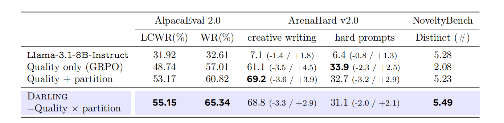
Classifier有没有用？
将训练的classifier替换成词汇多样性指标，使用4-gram来评估某个回答的多样性。实验结果：虽然将 4-gram 多样性与质量相结合在AlpacaEval 2.0, ArenaHard v2.0）能够达到与Darling 相当的水平，但在NoveltyBench中，其表现显著逊于 Darling。此外，在数学题目中，使用词汇多样性作为奖励的效果在 pass@1 性能上甚至不如原生的 GRPO 基准。 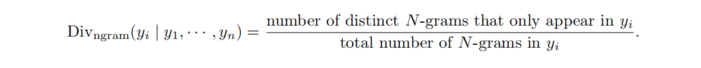 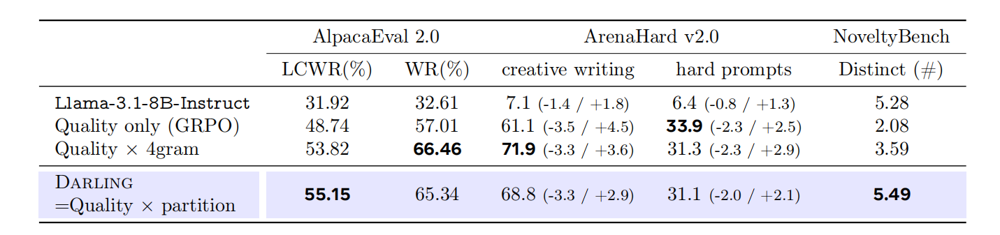
去掉Normalization有没有影响
从结果上看，RL中有没有Normalization影响不大。反而是性能有微小提升。 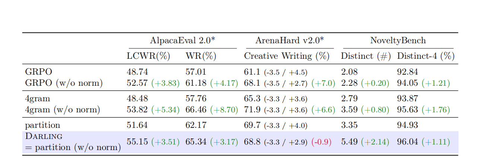 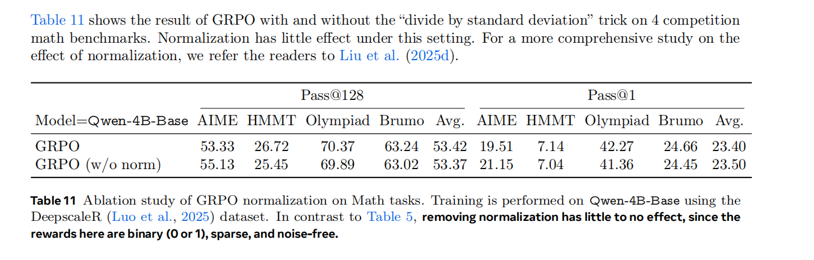